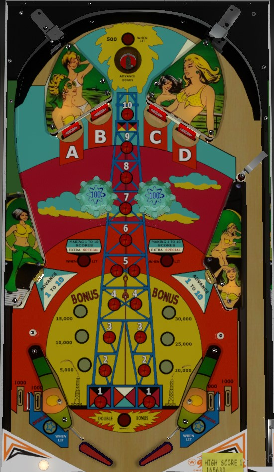

Shoot to the top of the table repeatedly until you make the top saucer enough to max out the base bonus at 30,000 points. Ideally, along the way, pop bumper luck or wise nudging allowed you to complete the A-B-C-D drop targets, which lights double bonus. Once bonus is maxed and doubled, shoot up the center of the table to collect lit 1-10 numbers; completing it 2+ times on the same ball awards a special, extra ball, or 10,000 points depending on game settings.
Always full plunge to the top saucer. The saucer scores 50 points and a bonus advance; each bonus advance is worth 5,000 points at the end of the ball. If A-B-C-D has been completed on the current ball, the top saucer scores 500 points instead of 50.
Each target down scores 1,000 points. Drop targets reset when all 4 are knocked down or at the end of each ball. Completing the A-B-C-D targets advances the bonus, lights double bonus, and lights the top saucer to score 500 points instead of 50.
The numbers 1 through 10 are depicted going up the playfield. The numbers 1 through 5 each have two corresponding buttons. At the start of each ball, the #1 buttons are lit. Rolling over a lit button or hitting one of the lower side standup targets scores 1,000 points and moves the lit button up to the next number. The buttons are positioned so that a precise flipper shot can roll over many of the buttons in sequence, collecting many numbers at the same time. After collecting a set of 1-10, the lit number resets back to 1. The first completion of 1-10 lights the near in lanes for a Special, which score an extra ball or 10,000 points. Starting with the second 1-10 completion, every completion instantly scores an Extra Special, which can be set to a free game, an extra ball, or 10,000 points. The out lane Special is nearly impossible to collect, so the good awards come from completing 1-10 twice or more in one ball; a very precise shot can complete 1-10 in one press of the flipper button.
There are no in lanes. Flippers back up almost directly to the slingshots, with a very small metal rail separating the two and allowing for slightly easier ball cradling. There are two out lanes on each side of the table. All out lanes score 1,000 points; the near out lanes are both lit for Special after completing 1-10 once on a ball. Because of the slingshot shape and the lack of additional pins in the out lane, going through the near in lane to collect the Special is extremely difficult.
Bonus is advanced by the top saucer or by completing the A-B-C-D drop targets. Each bonus advance is worth 5,000 points of base bonus instead of the conventional 1,000. The first bonus advance, worth 5,000 points, is given for free. Max base bonus is 30,000 points. Bonus is doubled to a maximum of 60,000 points by completing the A-B-C-D drop targets one time. Bonus is extremely important on this game, and building and doubling the bonus should be the first priority of any player looking for a high score.